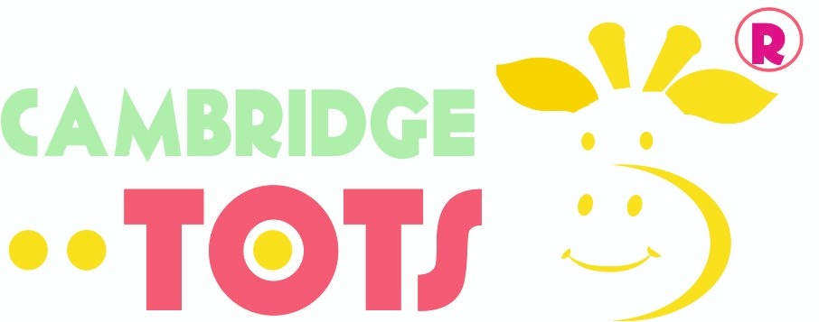
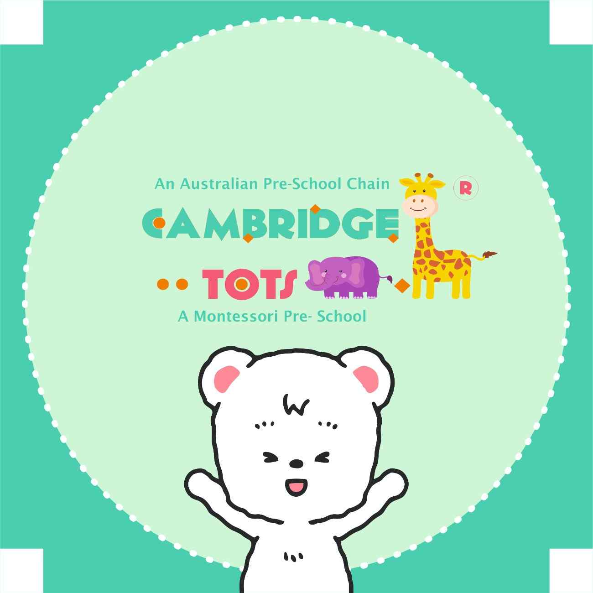

At Cambridge Tots, every day is full of wonders. We foster curiosity, self-confidence, and a lifelong love for learning in a joyful, safe, and nurturing environment.

"Little hands exploring today, big dreamers shaping tomorrow."
"Learning is a joyful adventure when curiosity leads the way!"
"Every child is a unique star, ready to shine in their own vibrant colors."
Dr. Maria Montessori was a pioneering Italian physician and educator who transformed early childhood learning worldwide. She recognized that children learn best when given the freedom to explore independently within a structured, loving environment.
At Cambridge Tots, we honor her timeless ethos: "Help me to do it by myself." Our child-centered curriculum encourages problem-solving, emotional growth, and practical life skills tailored to each child's natural pace.
Empowering children to choose activities that match their natural interests.
Classrooms crafted with kid-sized tools that invite hands-on exploration.
Tactile materials that turn abstract ideas into playful, concrete understanding.